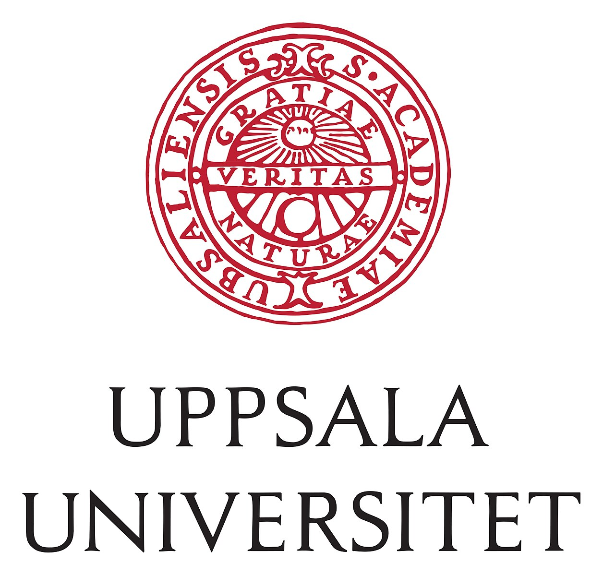

The Workshop
The Nordic Network for researchers and practitioners of Constraint programming (NordConsNet, the network formerly known as SweConsNet) invites you to participate in its next workshop. The purpose is to share information about the research and practice of constraint programming (CP) in the Nordic countries. This is the jubilee 20th edition of this almost annual workshop. It includes a surprise celebration of the career and ACP Research Excellence Award of Mats Carlsson.
Organisation
The NordConsNet Workshop 2025 is chaired by Pierre Flener and Justin Pearson, both of the Optimisation research group at Uppsala University, Sweden. They founded this network as SweConsNet in 2002, when they knew a bit less of HTML than now.
Dates
The workshop is held from lunch on Wednesday 20 August to lunch on Thursday 21 August 2025.
Location
The workshop takes place at Uppsala University in lecture hall 101195 (Heinz-Otto Kreiss) on floor 1 of house 10 at Ångström Laboratory on Regementsvägen 10 in Uppsala, Sweden. The two lunches are included and are at the same address. The venue is a pleasant thirty-minute walk from the central railway station, and we have ordered good weather.
Programme
Wednesday 20 August 2025
| Time | Presenter | Title | Slides |
|---|---|---|---|
| 11:00 -- 11:15 | Pierre Flener | opening remarks | slides |
| 11:15 -- 12:00 | Nicolas Beldiceanu (IMT Atlantique, France) | La mémoire retrouvée : Promenade en PPC liée à mon temps passé à Uppsala | slides |
| 12:00 -- 13:30 | lunch | ||
| 13:30 -- 14:00 | Mats Carlsson (Research Institutes of Sweden) | The Anatomy of the SICStus CLPFD Solver | slides |
| 14:00 -- 14:20 | Greger Ottosson (Cube5 AI, France) | 30 Years Later: Lasting Lessons from Mats (and Constraints) | slides |
| 14:20 -- 14:30 | Magnus Rattfeldt (Jeppesen, Sweden) | SuperMats | |
| 14:30 -- 15:00 | Peter J. Stuckey (Monash University, Australia) | RAIRE: A Branch and Bound Approach to Auditing Instant-Runoff Voting Elections | tba |
| 15:00 -- 15:30 | fika | ||
| 15:30 -- 15:50 | Gabriel Hjort Åkerlund | My Experience of Working with a Magician | |
| 15:50 -- 16:00 | Morten Mossige (ABB, Norway) and Arnaud Gotlieb (Simula, Norway) | Working with Mats | |
| 16:00 -- 16:10 | Helmut Simonis (Insight Centre, Ireland) | Learning about Two Exotic Languages | |
| 16:10 -- 16:30 | Roberto Castañeda (Oracle, Sweden) | Working in Unison with Mats: Optimizing Machine Code for Fun and Profit | slides |
| 16:30 -- 17:00 | Ramiz Gindullin (Uppsala University, Sweden) | Using CP for Compound Dispensing between Microplates | slides |
| 17:00 -- 17:30 | Mikael Zayenz Lagerkvist (SambaNova Systems, Sweden) | RosterLogic Variation: Building a Custom CBLS Solver for a Single Problem | slides |
Thursday 21 August 2025
| Time | Presenter | Title | Slides |
|---|---|---|---|
| 09:30 -- 10:00 | Peter Stuckey (Monash University, Australia) | Unit Types for MiniZinc | tba |
| 10:00 -- 10:30 | Erik Cervin Edin (Ericsson.com, Sweden) | Lessons Learnt from Developing & Maintaining the World's Largest CP Model | tba |
| 10:30 -- 11:00 | Frej Knutar Lewander (Uppsala University, Sweden) | Dependency-Curated Large Neighbourhood Search | slides |
| 11:00 -- 11:30 | Wietze Koops (Lund University & University of Copenhagen) | Practically Feasible Proof Logging for Pseudo-Boolean Optimisation | tba |
| 11:30 -- 11:45 | Justin Pearson | closing remarks | |
| 11:45 -- 13:00 | lunch |
Sponsors

Mathematics & Computer Science (MaDa) section
Submit a Presentation Proposal (closed)
We hope for your participation, and encourage you to submit a proposal for a presentation of your ongoing work, recent results, or a relevant discussion topic. There are no abstract and paper submissions, no reviews, and no proceedings, hence recent conference or journal papers may also be presented. Contact Pierre Flener if you would like to present something.
Registration (closed)
Send an email to Justin Pearson. Registration (closed) --- including 2 lunches and fika --- must be sent no later than Monday 11 August 2025 inclusive, mentioning your dietary preferences. There is no registration fee for the workshop.
If you missed the registration deadline, then you are still very welcome to attend talks (the lecture hall is large enough), but catering cannot be guaranteed.
You may forward this information to anyone who has a legitimate interest in this workshop but is not yet on the NordConsNet mailing list: they can subscribe to it by applying to Justin Pearson.
Accommodation
We hold 20 rooms for the workshop night at Best Western Hotel Uppsala on Trädgårdsgatan 5A in the centre, for 1,395 SEK (including VAT): write to booking@BestWesternUppsala.se (or call +4618121000) and mention "NordConsNet Workshop 2025": first come, first served.
Abstracts
RAIRE: A Branch and Bound Approach to Auditing Instant-Runoff Voting Elections
Peter J. Stuckey (Monash University, Australia)
Risk-limiting post election audits guarantee a high probability of correcting incorrect election results, independent of why the result was incorrect. Ballot-polling audits select ballots at random and interpret those ballots as evidence for and against the actual recorded result, continuing this process until either they support the recorded result, or they find evidence that it is wrong. Ballot polling for first-past-the-post elections is well understood, and used in some US elections. We define the first approach to ballot-polling risk-limiting audits for Instant Runoff Voting (IRV) elections. We show that for almost all real elections we found, we can perform a risk-limiting audit by looking at only a small fraction of the total ballots. The approach has now been used to audit actual elections in Colorado.
Unit Types for MiniZinc
Peter J. Stuckey (Monash University, Australia)
Discrete optimization models often reason about discrete sets of objects, but discrete optimization solvers only deal with integers. One of the key challenges when building models for discrete optimization problems is avoiding bugs. Because the model only defines constraints, decisions, and an objective that are then run on a solver, bugs in the model can be very difficult to track down. Hence, modelling languages should have strong type systems to detect as many bugs as possible at the modelling level. In this paper, we propose unit types for MiniZinc. Unit types allow us to differentiate between different integers appearing in the model. Almost all integer decisions in models are either about a set of objects or some measurable resource type. Using unit types, we can add more type safety to our models by avoiding confusion of decisions on different resource types. Compared to other programming languages, unit types in our proposal are unusual. MiniZinc models often deal with multiple levels of granularity of the same resource, e.g., scheduling to the minute, but doing resource allocation on the half day, or use an unspecified granularity, e.g., the same job-shop scheduling model could use task durations given in minutes or days. Our proposed unit types also differentiate between coordinate unit types, e.g., the time when an event occurred, and the usual delta unit types, e.g., the time difference between two events. Errors arising from mixing coordinate and delta types can be very challenging to debug, so we extend the type system to track this for us.
The Anatomy of the SICStus CLPFD Solver
Mats Carlsson (Research Institutes of Sweden)
A notable development in the history of CP was the realisation that unification in logic programming is a special case of constraint solving, leading to the constraint logic programming (CLP) framework. This led to the development of innovative CLP solvers as well as to the integration of constraints into classic Prolog systems.
For such an integration, technical solutions must be found for many tasks like domain representation, constraint propagation, search, dedicated filtering algorithms, and peaceful coexistence with the Prolog virtual machine and runtime system.
This talk gives an overview of the CP subsystem of SICStus Prolog: the key extensions to Prolog that were necessary, details of the solver architecture, supporting both integers and reals, and a discussion of design choices.
Lessons Learnt from Developing & Maintaining the World's Largest CP Model
Erik Cervin Edin (Ericsson.com, Sweden)
It’s a behind-the-scenes look at the challenges, surprises, and satisfaction of turning declarative modelling into real-world impact. What happens when your constraint programming model grows past 8,000 lines of MiniZinc and over 120,000 rows of data? At Ericsson, we've built what is likely one of the world’s most complex CP models — a system that encodes thousands of interdependent rules to configure complex products used around the globe.
In this talk, I'll share lessons learnt from developing and maintaining this model in a production setting. I will cover practical strategies for managing scale and complexity, including modularisation, validation pipelines, and approaches to debugging and testing. I will also reflect on the trade-offs between readability, performance, and maintainability when operating at this scale — and the sometimes surprising limitations we’ve had to work around in solvers, tooling, and the MiniZinc ecosystem itself.
Mikael Zayenz Lagerkvist (SambaNova Systems, Sweden)
RosterLogic Variation: Building a Custom CBLS Solver for a Single Problem
In "The Work Task Variation Problem" (CP 2025, Lagerkvist and Rattfeldt) we present a custom CBLS-like solver (built mainly in 2019) for solving the Work Task Variation (WTV) problem, and show that it is competitive for producing reasonable solutions quickly. But why did we make the effort to build our own solver for solving a single problem, and was that a smart choice? In this talk, I will dig deeper into why we built our own solver, including pragmatics, "business decisions", and the evolving landscape of combinatorial optimisation solvers over the last 6 years.
Dependency-Curated Large Neighbourhood Search
Frej Knutar Lewander (Uppsala University, Sweden)
In large neighbourhood search (LNS), an incumbent initial solution is incrementally improved by selecting a subset of the variables, called the freeze set, and fixing them to their values in the incumbent solution, while a value for each remaining variable is found and assigned via solving (such as constraint programming-style propagation and search). Much research has been performed on finding generic and problem-specific LNS selection heuristics that select freeze sets that lead to high-quality solutions. In constraint-based local search (CBLS), the relations between the variables via the constraints are fundamental and well-studied, as they capture dependencies of the variables. We apply these ideas from CBLS to the LNS context, presenting the novel dependency curation scheme, which exploits them to find a low-cardinality set of variables that the freeze set of any selection heuristic should be a subset of. The scheme often improves the overall performance of generic selection heuristics. Even when the scheme is used with a naïve generic selection heuristic that selects random freeze sets, the performance is competitive with more elaborate generic selection heuristics.
Using CP for Compound Dispensing between Microplates
Ramiz Gindullin (Uppsala University, Sweden)
Liquid-handling instruments are indispensable tools in modern biomedical laboratories, streamlining compound and sample management tasks with precision and efficiency. Compound dispensing from large chemical libraries divided over hundreds of microwell plates can require substantial swapping of plates, particularly if compounds from multiple source plates are to be dispensed in each destination plate. Despite robotisation, plate swapping is a time-consuming necessity for high-throughput experiments, posing a significant bottleneck. We explore the application of constraint programming (CP) to the planning of liquid-handling tasks to minimise plate swaps in automated dispensing. We formulate the problem as a combination of a set partitioning problem and the construction of a bipartite network. We present six CP models implemented in MiniZinc and evaluate their performance on synthetic benchmarks using three state-of-the-art constraint solvers.
Practically Feasible Proof Logging for Pseudo-Boolean Optimisation
Wietze Koops (Lund University & University of Copenhagen)
Certifying solvers have long been standard in Boolean satisfiability (SAT), allowing for proof logging and checking with limited overhead. However, developing similar tools for combinatorial optimisation has remained a challenge. A recent promising approach covering a wide range of paradigms is pseudo-Boolean proof logging, but this has mostly consisted of proof-of-concept works far from delivering the performance required for real-world deployment. In this work, we present an efficient toolchain based on VeriPB and CakePB for formally verified pseudo-Boolean optimisation, and implement proof logging for the full range of techniques in the state-of-the-art solvers RoundingSat and Sat4j. Our experimental evaluation shows that proof logging and checking performance in this much more expressive paradigm is now quite close to the level of SAT solving, and hence clearly practically feasible. This is joint work with Daniel Le Berre, Magnus Myreen, Jakob Nordström, Andy Oertel, Yong Kiam Tan, and Marc Vinyals.